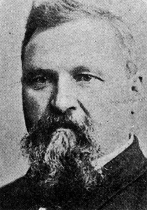

|
Lightly settled, at the time of the Civil War Florida still exhibited many of
the characteristics of the frontier. It contained a large black minority, was
bitterly racist, and was often wracked by violence.
In accordance with his plan of Reconstruction, Andrew Johnson on July
12,1865, appointed William Marvin, a conservative Unionist, Provisional
Governor. Marvin called elections for a constitutional convention that abolished

John Pope
|
slavery but failed to enfranchise a single freedman. Encouraged by the leniency
of the President's program, the legislature elected under the amended
constitution, while ratifying the Thirteenth Amendment, passed a stringent black
code remanding the freedmen to a condition little better than slavery. In
December 1866 it rejected the Fourteenth Amendment.
The Reconstruction Acts returned Florida to military rule. Part of the Third
District, it was first commanded by General John Pope and then by George Gordon
Meade. In accordance with the law, African Americans were enfranchised and a new
convention elected. Although the Republicans secured control, they were split
into factions. The moderates under Harrison Reed sought to cooperate with some
of the more pliant conservatives, whereas the radicals under Liberty Billings,
William U. Saunders, and Daniel Richards (the "Mule Team"), were eager to
elevate the blacks. Both factions submitted constitutions to Congress that
endorsed the moderate one, a document so arranged as to dilute the black vote.
Harrison Reed was elected Governor, and the state was readmitted to the Union in
July 1868.
During the Reed administration, the Florida Republican party continued to be
rent by internal squabbles. The there were two factions now; the moderate Reed
wing anxious to harmonize the interests of blacks, white Republicans, and even
conservatives; they were opposed by a group of federal officeholders led by U.S.
Senator Thomas W. Osborn, a former agent of the Freedmen's Bureau, who had
considerable influence with the African-American voters in the state. The Osborn
forces tried four times to impeach the Governor, but lack of evidence frustrated
their efforts in the long run. In 1872 the moderate Ossian B. Hart was elected
Governor, only to die soon afterward and to be succeeded by Reed's opponent,
Marcellus L. Stearns, who found it as difficult to end the factionalism as his
predecessors.
Although often accused of wastefulness and corruption, the Republican regime
in Florida actually succeeded in developing many of the state's resources, in
encouraging the building of railroads, in unraveling some of the financial chaos
inherited from its predecessors, and in improving the lot of the African
American citizens of the state. In 1873 the legislature, which had already
provided for schools for the freedmen, passed a civil rights act, limited, to be
|

Marcellus L. Stearns
|
sure, but nevertheless providing for equal access to publicly owned facilities.
It also enacted various measures for the relief of labor, including lien laws to
protect wages and a ten-hour day. But in spite of their efforts, the Republicans
were never able to overcome native hostility manifesting itself by continued
virulent racism and terrorism.
By 1876 it was clear that the Republican state government was in deep
trouble. Detested by large numbers of the party, Governor Stearns was unable to
unify the organization behind his candidacy for reelection. It was likely that
many Republicans, while remaining loyal to the national ticket, would support
George F. Drew, the local Democratic contender. When it became evident that the
returns from Florida were among those that would decide the disputed
presidential election, the actions of the Returning Board at Tallahassee became
crucial. Dominated by the Republicans, it decided in favor of Rutherford B.
Hayes as well as of Stearns, but so questionable were the returns from several
counties that the decision, particularly in reference to the state election, was
challenged in the courts. Although the Electoral Commission in Washington
eventually accepted the Hayes returns, local courts overturned the state count,
and the Democrat Drew was inaugurated well before the new President took office.
The process of Reconstruction in the state thus ended even before Hayes'
withdrawal of the troops from Southern statehouses. The "Redeemers" wrote a new
constitution in 1885; segregationist laws followed, and the state's black
residents were once again remanded to a position of distinct inferiority.
Source: Hans Trefousse, Historical Dictionary of Reconstruction
(Westport, CT: Greenwood Press, 1991), 79-80.
|